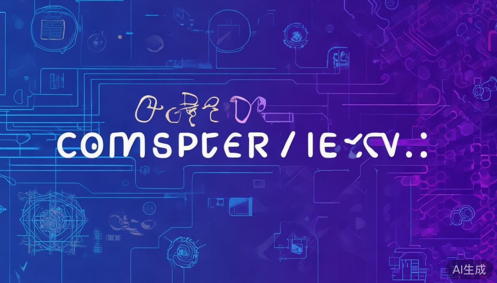

AI 研究方向详解（知识网 · 给所有人看）
这是知识网的正文：每个研究方向讲清「是什么、关键人物、里程碑成果、最新 2026 进展」。持续更新。
1. 自然语言处理（NLP）
是什么：让机器理解、生成人类语言，是 AI 最核心、应用最广的方向。
关键人物/机构：OpenAI、Google、DeepSeek、Anthropic、斯坦福。
里程碑：Transformer（2017） BERT（2018） GPT-3（2020） ChatGPT（2022） DeepSeek-R1（2025）。
最新 2026：GPT-5.6、DeepSeek-V4-Pro、Kimi K3 把上下文推进到百万 Token，思考模式（reasoning）成为标配。
2. 计算机视觉（CV）

是什么：让机器看懂图像与视频，做人脸识别、检测、分割、生成。
关键人物：李飞飞（ImageNet）、何恺明（ResNet）、杨立昆（CNN）。
里程碑：AlexNet（2012） ResNet（2015） YOLO 系列 SAM（2023）。
最新 2026：视觉模型全面多模态化，分割、理解、生成一体化。
3. 语音识别与合成
是什么：让机器「听」和「说」，包括语音转文字、文字转语音、声音克隆。
里程碑：Whisper、FunASR（识别）；ChatTTS、GPT-SoVITS、ElevenLabs（合成）。
最新 2026：声音克隆与实时同传走向实用，开源合成质量逼近真人。
4. 强化学习（RL）
是什么：让智能体通过「试错 + 奖励」学习决策。
关键人物：DeepMind、OpenAI。
里程碑：DQN（2015） AlphaGo（2016） RLHF 成为大模型对齐的关键一环。
最新 2026：RL 被用来训练推理模型（如 DeepSeek-R1 类），并推进具身智能。
5. 生成式模型
是什么：从噪声或条件生成新内容，覆盖图像、视频、音频、文本。
里程碑：GAN（2014） Stable Diffusion（2022） DALL·E 3 Sora（2024） Flux。
最新 2026：开源视频生成爆发（Wan、HunyuanVideo、CogVideoX、LTX），几秒到长视频。
6. 多模态
是什么：把文本、图像、音频、视频放进同一个模型统一理解与生成。
里程碑：CLIP（2021） GPT-4V Qwen-VL、InternVL、CogVLM。
最新 2026：多模态 Agent 能做「看图操作软件」「看图写代码」。
7. 具身智能与机器人
是什么：让 AI 有「身体」，在真实或仿真世界里行动。
关键机构：宇树、智元、Figure、特斯拉、DeepMind。
最新 2026：VLA（视觉-语言-动作）模型兴起，仿真（MuJoCo/Gazebo）到现实的迁移是关键。
8. AI for Science
是什么：用 AI 加速科学研究，被看作「第四种科研范式」。
里程碑：AlphaFold（2020，2024 化学诺奖）、AlphaFold3、气象大模型 GraphCast。
最新 2026：药物发现、材料设计、气候预测全面 AI 化。
9. 因果推断
是什么：从「相关性」走向「因果性」，回答「为什么」。
关键人物：Judea Pearl。
现状：与大模型结合的因果推理仍处早期，是前沿难点。
10. 图神经网络（GNN）
是什么：处理社交网络、分子、知识图谱等图结构数据。
里程碑：GCN（2017）、GAT；框架 PyG、DGL。
最新 2026：图推理与大模型结合，用于知识图谱问答。
11. 联邦学习
是什么：数据不出本地，多端协作训练模型，保护隐私。
框架：Flower、FedML。
最新 2026：隐私计算 + 大模型参数高效微调成为落地重点。
12. AI 安全与对齐
是什么：让模型安全、可控、符合人类价值观，防幻觉、防滥用。
里程碑：RLHF、Constitutional AI；护栏框架 NeMo Guardrails、Guardrails AI。
最新 2026：中国加快《人工智能法》立法，美欧推进 AI 伙伴关系与监管协调。
13. 边缘 AI
是什么：把模型跑在手机、摄像头、嵌入式设备等端侧，低延迟、隐私好。
框架：ONNX Runtime、OpenVINO、TensorFlow Lite、腾讯 NCNN。
最新 2026：手机本地跑开源大模型成为常态，量化技术是核心。
14. 自动驾驶
是什么：感知、决策、控制的闭环，让车自己开。
开源：百度 Apollo、Autoware。
最新 2026：端到端大模型方案与 Robotaxi 商业化并行推进。
15. 基础模型
是什么：在大规模数据上预训练出「底座」，再微调适配各种任务。
代表：GPT、Llama、Qwen、DeepSeek、Kimi。
最新 2026：MoE 稀疏架构、百万 Token 上下文、开源模型进入第一梯队。
16. Agent 与多智能体
是什么：让 AI 自主规划、调用工具、完成多步骤任务。
框架：LangChain、CrewAI、AutoGen、OpenHands、Goose。
最新 2026：MCP（Model Context Protocol）统一工具连接，Agent 从「聊天」走向「干活」。
知识网使用方式：这一页是「方向地图」，每个方向都可继续往下展开成「关键论文 + 代表人物 + 最新进展 + 怎么上手」。持续补充，不停。
本文由本站 AI 创作整理，内容基于公开知识/官方资料提炼，信息请以官方发布为准； 涉及的历史事件、产品与数据均可在公开渠道查证，本站不编造来源。引用外部内容遵循其原始许可，标注出处即可。